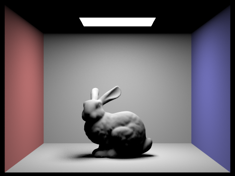
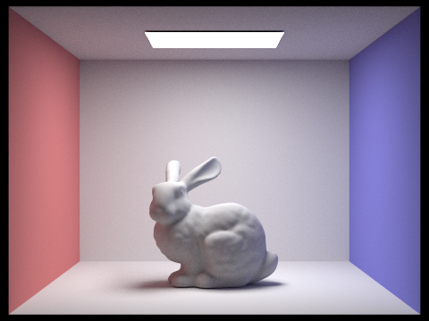
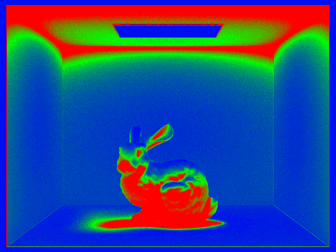
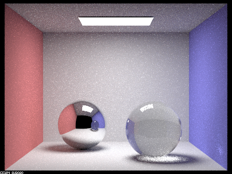
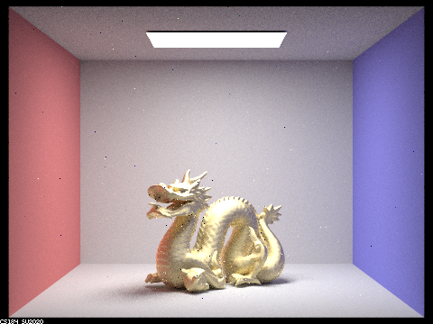

|
Rebecca Wong |
programming |
visual design |
product design |
|
|
Rebecca Wong |
programming |
visual design |
product design |
Rasterized 3D model
Scene rendered with direct illumination
Scene rendered with global illumination
Adaptive sampling map - More samples taken at surfaces in blue and fewer samples taken at surfaces in red
Mirror and glass surfaces rendered with global illumination
Metal surface rendered with global illumination
I created a raytracer that rasterizes 3D models by sampling screen points, transforming them into world space, and then checking for ray intersections with objects. To accelerate naive raytracing, I implemented a bounding volume hierarchy which partitioned the space into nodes. The nodes were organized in a binary tree structure, such that rays would only be cast in a certain area of the 3D space if the bounding box was intersected and thus there are pixels in that region that must be rasterized.
With the rays created, I implemented direct illumination by sampling rays from light sources to objects to calculate the radiance on an object. To create a more realistic scene, I implemented global illumination, which accounts for bounces of light off of surfaces by generating new rays at the intersection points according to the material type, as different materials reflect light in different ways. The sampling method was optimized using adaptive sampling, which will check for convergence using the mean and variance of already collected samples and stop sampling earlier if they have converged.